1 / 5
VODENI KOLESARSKI IZLETI PO SLOVENIJI
Vodeni kolesarski izleti po Zgornjesavski dolini, Julijskih Alpah in širši Gorenjski. Ture sestavimo glede na tvoj dan, izkušnje in tempo – od lahkih razglednih voženj do daljših alpskih izletov.
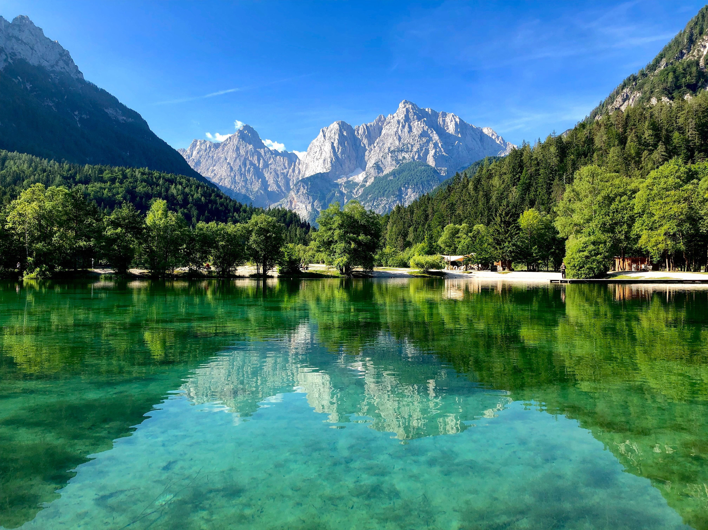
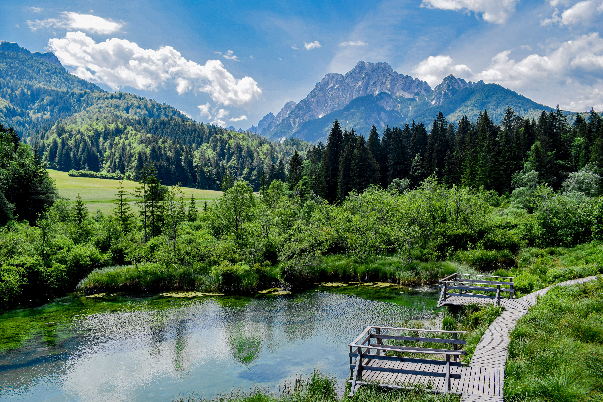
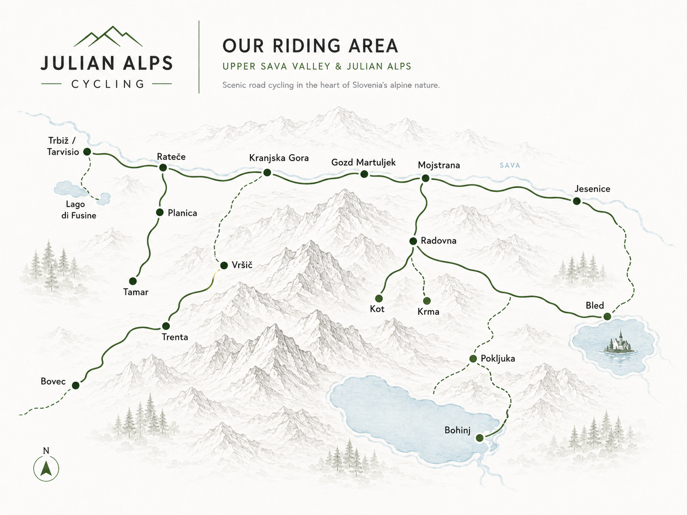
Vodeni kolesarski izleti.
Krajše razgledne ture za prvi stik z Julijskimi Alpami.
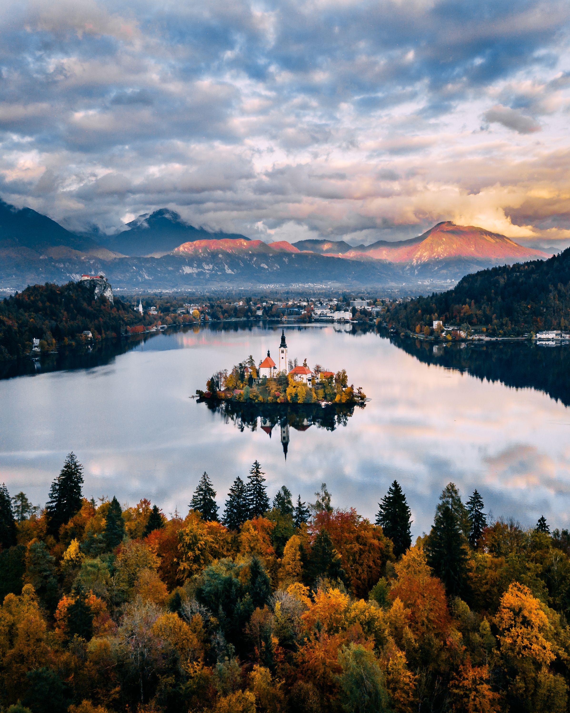
Mirnejše ceste, lokalni vzponi, slapovi in jezera.
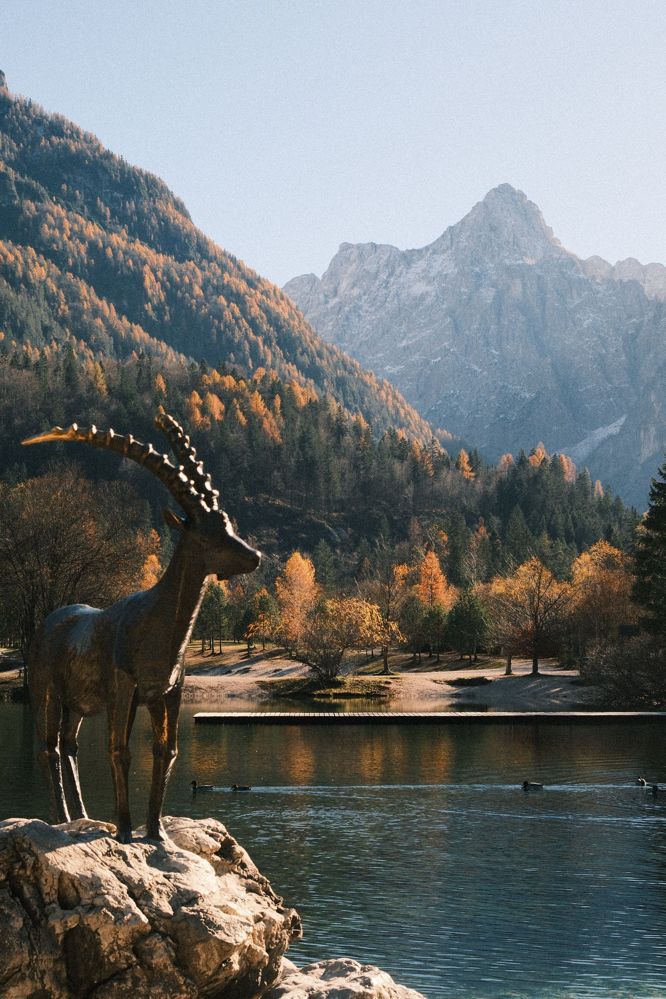
Daljši gorski dnevi, ikonični vzponi in velike ceste.
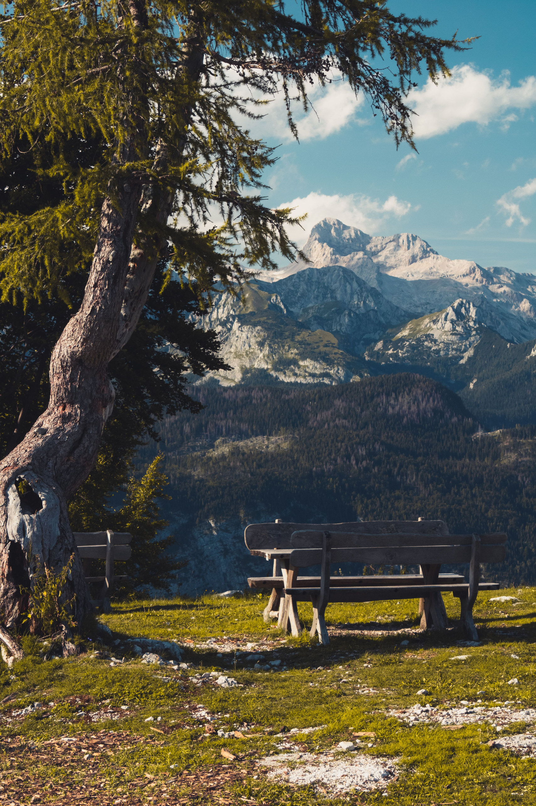
Skrite gozdne ceste, makadam in bolj pustolovski ritem.
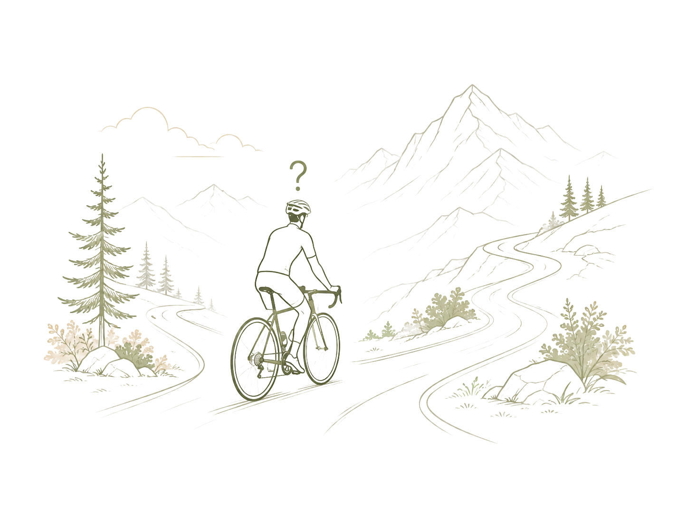
Izberi kilometre, višince in občutek vožnje.
Najem koles
Če nimate svojega kolesa, vam lahko ob turi uredimo tudi najem.
V povpraševanju nam samo sporočite, da potrebujete kolo ali čelado, ker nimate svoje opreme.
Premišljeno vodene ture
Turo sestavimo okoli ljudi, ne okoli urnika. Izberemo mirne ceste, pravi tempo in razglede, ki se odprejo takrat, ko vožnja dobi svoj ritem.
Od ideje do vožnje
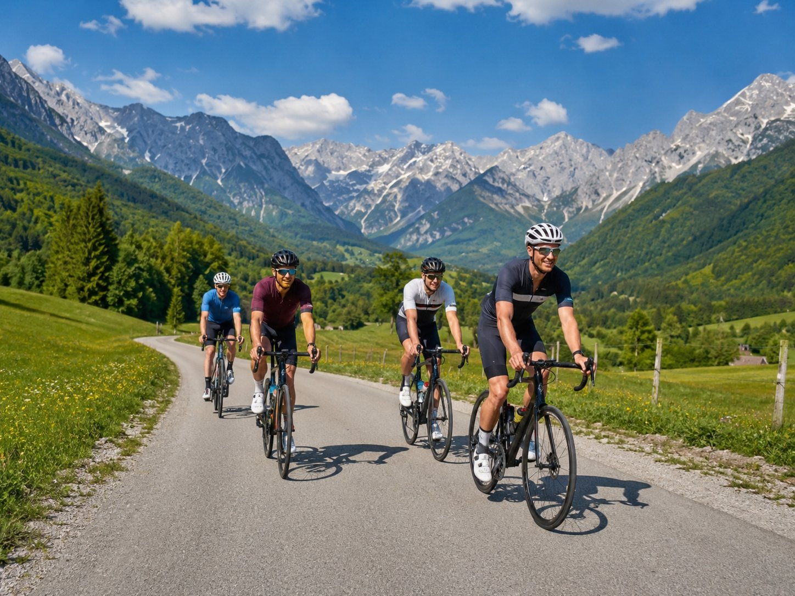
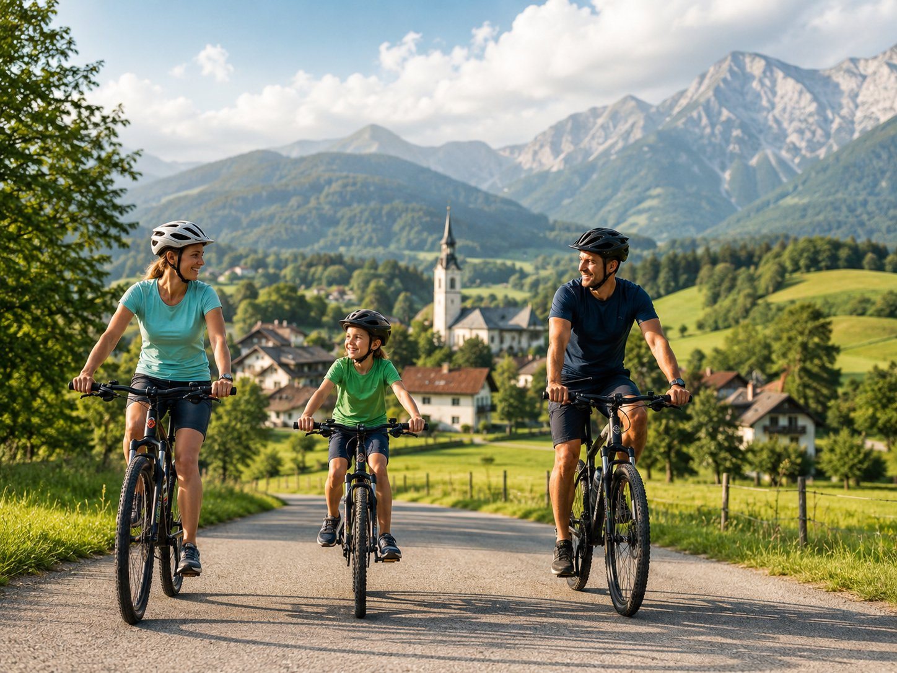
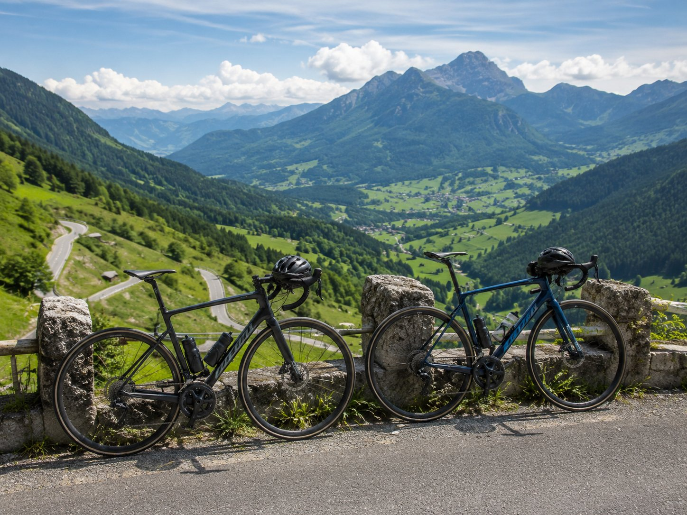
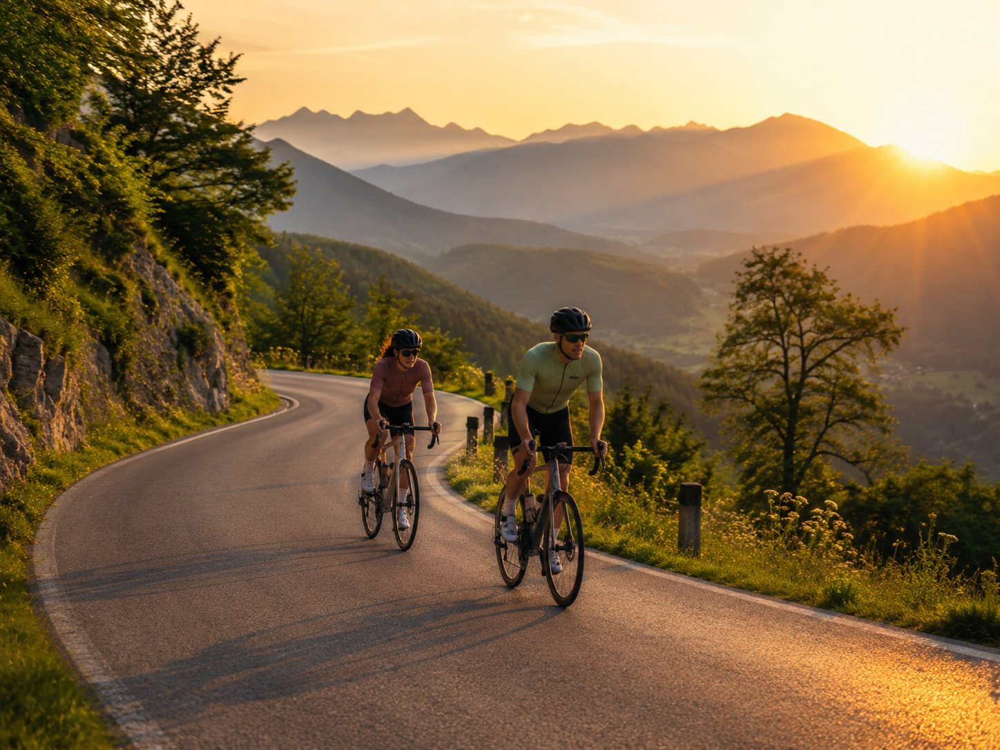
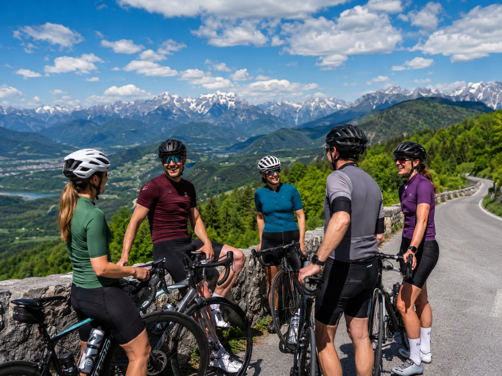
Vodnik, ki pozna vse kotičke, razgledne ovinke in zna prisluhniti skupini. Poskrbi, da vožnja ostane sproščena in varna.
Oseba za organizacijo, termine in vse male dogovore pred izletom. Pomaga izbrati turo, ki najbolj ustreza vaši ekipi.
Lokalno znanje, izkušnje na terenu in občutek za vožnjo, postanke in razglede. To je del ekipe, ki turi doda karakter, Vam pa nepozabne spomine.
Z VESELJEM VAM POMAGAMO PRI IZBIRI PRAVE TURE.
POŠLJITE NAM POVPRAŠEVANJE IN SKUPAJ BOMO PRIPRAVILI KOLESARSKO IZKUŠNJO.
Odgovorimo z realnim predlogom poti, težavnosti in termina.
✓ Hvala! Javimo se kmalu.